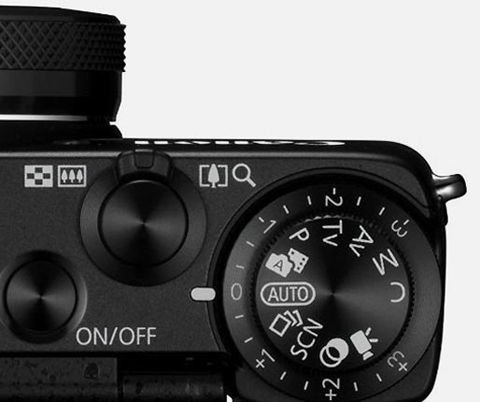
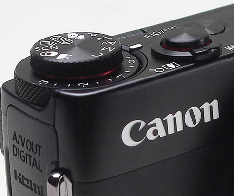

彰顯專業與高貴感
G7X擁有超乎想像的高感光、不間斷高速連拍、
搭載星空模式、創意拍攝模式…等新的攝影
模式，在小型相機裡實現最先進的拍攝機能。
搭載星空模式、創意拍攝模式…等新的攝影
模式，在小型相機裡實現最先進的拍攝機能。

兼顧高畫質與輕巧機身
結合1吋高感光CMOS影像感測器及DIGIC 6數位影像
處理器，加上Canon鏡頭不斷追求更高畫質呈現，不論
夜景或低光源的室內都能有效抑制雜訊並生動描繪。
處理器，加上Canon鏡頭不斷追求更高畫質呈現，不論
夜景或低光源的室內都能有效抑制雜訊並生動描繪。